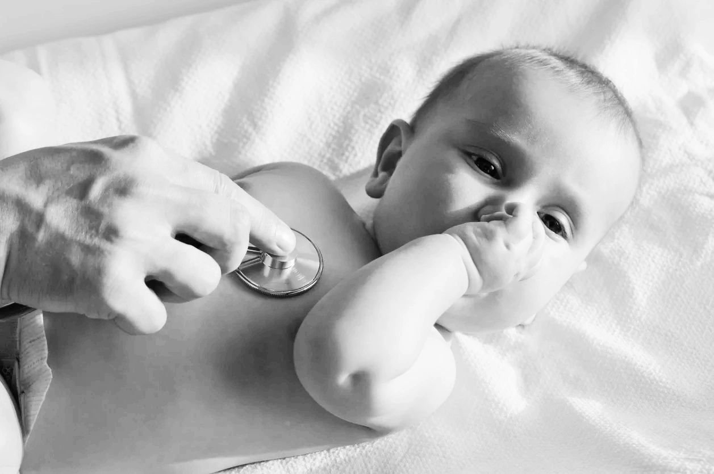

Selected Publications from Our Research Team
Randomized clinical trials of early feeding practices
Early Vitamin D Supplementation in Infants Born Extremely Preterm and Fed Human Milk: A Randomized Controlled Trial
J Pediatr. 2025
Early full enteral nutrition with fortified milk in very preterm infants: a randomized clinical trial
Am J Clin Nutr. 2025
Early and exclusive enteral nutrition in infants born very preterm
Arch Dis Child Fetal Neonatal Ed. 2024Free article
Early Human Milk Fortification in Infants Born Extremely Preterm: A Randomized Trial
Pediatrics. 2023 Sep 1;152(3):e2023061603.Free article
Body composition of extremely preterm infants fed protein-enriched, fortified milk: a randomized trial
Pediatric Research 2021 Jun 28:1-7Free article
Serial assessment of body fat and fat-free mass accretion in very preterm infants: a randomized trial
Pediatric Research 2020 Nov;88(5):733-738.Free article
Higher or usual volume feedings in very preterm infants: a randomized clinical trial
Journal of Pediatrics 2020 Sep;224:66-71.
Early progressive feeding in extremely preterm infants: a randomized trial
Am J Clin Nutr 2018. 107(3):365-370.Free article
A comparison of 3 vitamin D dosing regimens in extremely preterm infants: a randomized controlled trial
J Pediatr. 2016 Jul;174:132-138.Free article
A randomised trial of re-feeding gastric residuals in preterm infants
Arch Dis Child Fetal Neonatal Ed. 2015 May;100(3):F224-8.
Secondary analyses of randomized clinical trials
Microbial Interactions with Protein Intake and Preterm Infant Body Composition: Secondary Analysis of a Randomized Trial
J Nutr. 2026 Sep;156(9):101723.
Early gut microbiome composition of very preterm infants randomised to receive human milk volumes of 60 ml/kg/day or more within the first 36 hours after birth
Pediatr Res. 2025Free article
Long-term growth and neurodevelopment of extremely preterm infants randomized to fortified human milk diets enriched with a protein supplement
Pediatr Res. 2025Free article
Severity of Bronchopulmonary Dysplasia in Infants Born Extremely Preterm and Randomized to Early Human Milk Fortification with a Donor Milk-Derived Fortifier for 2 Weeks
J Pediatr. 2025
Total Fluid Administration and Weight Loss during the First 2 Weeks in Infants Randomized to Early Enteral Feeding after Extremely Preterm Birth
Neonatology. 2023;120(2):257-262.Free article
Safety and efficacy of early vitamin D supplementation in critically ill extremely preterm infants: an ancillary study of a randomized trial
J Acad Nutr Diet. 2022 Jun 18:S2212-2672(22)00384-7.
The gut microbiome of extremely preterm infants randomized to the early progression of enteral feeding
Pediatr Res. 2022Free article
Percent Body Fat Content Measured by Plethysmography in Infants Randomized to High- or Usual-Volume Feeding after Very Preterm Birth
Journal of Pediatrics 2021 Mar;230:251Free article
Dose-response effects of early vitamin D supplementation on neurodevelopmental and respiratory outcomes of extremely preterm infants at 2 years of age: a randomized trial
Neonatology 2018; 113:256-62Free article
Multicenter, observational studies
Time to Full Enteral Feeds and Late-Onset Sepsis in Extremely Preterm Infants
JAMA Netw Open. 2025 Nov 3;8(11):e2543940.
Association between Growth Trajectories and Body Composition Outcomes in Very Preterm Infants: A Cohort Study
Neonatology. 2025
Race as social determinant of growth and body composition among infants born very preterm
Pediatr Res. 2025
Risk Assessment of Cognitive Impairment at 2 Years of Age in Infants Born Extremely Preterm Using the INTERGROWTH-21st Growth Standards
J Pediatr. 2024
Timing of Red Blood Cell Transfusions and Occurrence of Necrotizing Enterocolitis: A Secondary Analysis of a Randomized Clinical Trial
JAMA Netw Open. 2024Free article
Growth Rates of Infants Randomized to CPAP or Intubation After Extremely Preterm Birth
J Pediatr. 2021 Jun 19:S0022-3476(21)00556-4Free article
Gestational age and birthweight for risk assessment of neurodevelopmental impairment or death in extremely preterm infants
Arch Dis Child Fetal Neonatal Ed. 2016 Nov;101(6):F494-F501.Free article
Single center, observational studies
Early body composition outcomes of infants born very preterm and receiving high volume, human milk feedings (≥170 mL/kg/day) before postnatal day 14
J Perinatol. 2026 Mar;46(3):467-469.
Histologic chorioamnionitis and fat mass accretion in infants born preterm
Pediatr Res. 2026 Mar;99(4):1443-1450.
Feeding Dynamics in Very Preterm Infants with Delayed Oral Feeding Attainment
Neonatology. 2025
Correlation Between Skeletal Muscle Mass and Fat-Free Mass in Infants Born Very Preterm
J Pediatr. 2025
Predicting body fat percentage at 36 weeks of postmenstrual age in infants born preterm: A diagnostic accuracy study
JPEN J Parenter Enteral Nutr. 2023 Nov;47(8):1056-1061.
Racial differences in growth rates and body composition of infants born preterm
J Perinatol. 2022 Mar;42(3):385-388.Free article
Postnatal growth of preterm infants 24 to 26 weeks of gestation and cognitive outcomes at 2 years of age
Pediatr Res. 2021 May;89(7):1804-1809Free article
Quantitative assessment of nutritive sucking patterns in preterm infants
Early Hum Dev. 2020 Jul;146:105044.Free article
Quality Improvement
Improving Time to Independent Oral Feeding to Expedite Hospital Discharge in Preterm Infants
Pediatrics. 2022 Mar 1;149(3):e2021052023.
Orogastric Tube Insertion in Extremely Low Birth Weight Infants
Advances in Neonatal Care 2021Video abstract
Reviews / commentaries
Enteral nutrition in neonates: current evidence from clinical trials and evolving strategies
Semin Perinatol. 2026 Jun;50(4):152236.
In the modern era of human milk-based feeding, is the greater risk to extremely preterm infants feeding too early or feeding too little?
Pediatr Res. 2026 May 15.
Exclusive enteral nutrition in preterm infants: How early is too early?
Semin Fetal Neonatal Med. 2025
Nutrition and the gut-brain axis in neonatal brain injury and development
Semin Perinatol. 2024
Revolutionizing Neonatal Nutrition: Rethinking Definitions and Standards for Optimal Care
Adv Nutr. 2024Free article
Infant body composition: A comprehensive overview of assessment techniques, nutrition factors, and health outcomes
Nutr Clin Pract. 2023 Oct;38 Suppl 2(Suppl 2):S7-S27.
The Practice of Enteral Nutrition: Clinical Evidence for Feeding Protocols
Clin Perinatol. 2023 Sep;50(3):607-623.Free article
Advancement of Enteral Feeding in Very-low-birth-weight Infants: Global Issues and Challenges
Newborn 2022; 1 (3):306-313.Free article
No publications match your search. Try a different word or topic.